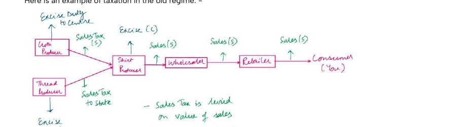
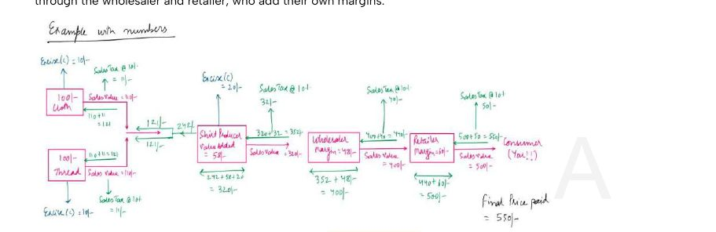
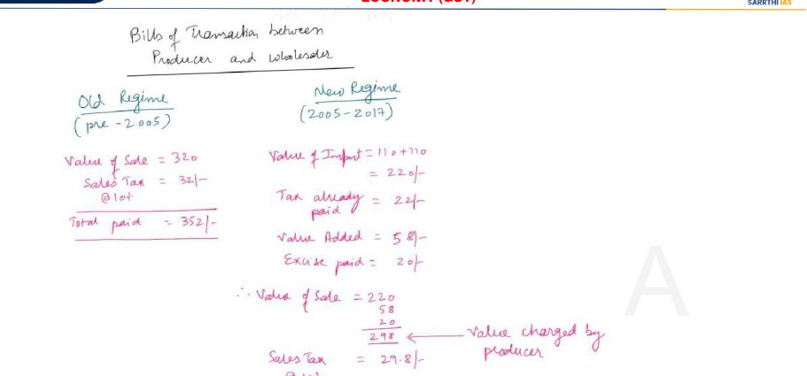
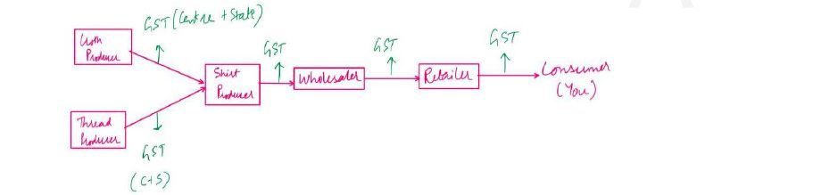
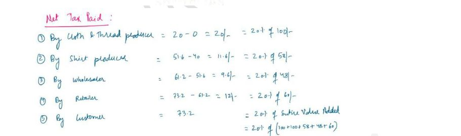
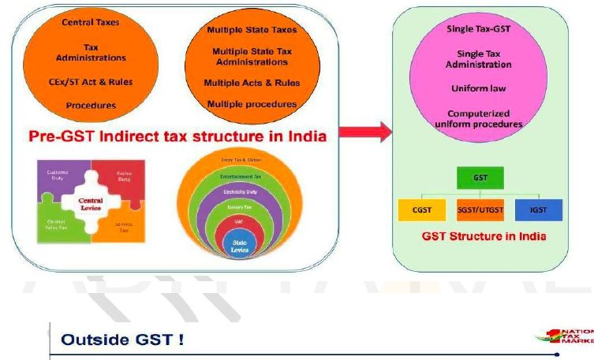
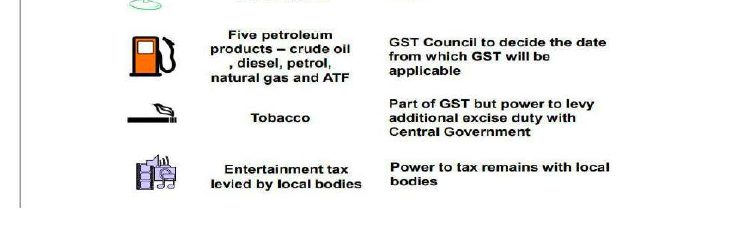

GST revenue, indirect versus direct tax shares and fiscal federalism feed the Budget.
Economy · GS Foundation · Chapter 11
Goods and Services Tax (GST)
Handout only: no class slidesHandout pages 1-13No PYQs quoted
Taxes as events, the old indirect-tax system and cascading (tax on tax), VAT and Input Tax Credit, why GST completes the job, the GST definition and its three properties, CGST, SGST and IGST, the GST Council, what stays outside GST, benefits and challenges, state compensation, revenue neutral rate, anti-profiteering, the Constitution (101st Amendment) Act, registration, composition, e-way bill and GSTN.
Chapter map#
- GST
Old system
- Events taxed: excise, sales tax, CST, entry
- Cascading: tax on tax
- ₹32: only ₹5.8 fresh
- ₹550 price, 33.5% effective tax
VAT and ITC
- VAT 2005; CENVAT/MODVAT 1980s
- ITC: same tax only
- Tax on whole value; effective on value added
- Left ₹2 tax on excise
GST
- Tax on supply except alcohol for human consumption
- One nation-one tax
- Destination-based
- VAT-like set-off
Taxes
- CGST + SGST within State
- IGST inter-State and imports
- Exports zero-rated; full drawback
- Customs outside GST
Council and law
- 101st Amendment 2016
- Art. 246A, 269A, 279A
- Quorum 50%, decision 75%
- States 2/3, Centre 1/3
Outside GST
- Alcohol for human consumption
- Five petroleum products
- Local entertainment tax
- Tobacco inside + extra excise
Challenges
- Slabs 0/5/12/18/28 + cess
- Lobbying, politicisation
- Compensation: 14% for 5 years
- Flat rate would be regressive
Administration
- Registration ₹20 lakh
- Composition, GSTR-4
- E-way bill 01.04.2018
- GSTN: 2013, Section 25, Infosys
Exam lens: priority and PYQs#
What the handout stresses
| Signal in the handout | Where | Why it matters |
|---|---|---|
| Cascading = tax on tax and tax on value already taxed. Of ₹32 tax, only ₹5.8 was on fresh value | Section 2 | Core concept; the shirt example |
| ITC works only tax against the same tax. Tax is always charged on the entire value; ITC makes it effectively a tax on value added | Section 3 | Two “very important points” in the handout |
| GST = tax on supply of goods and services other than alcohol for human consumption; one nation-one tax, destination-based, VAT-like | Section 4 | Statutory definition |
| CGST, SGST, IGST; SGST goes to the destination state; customs is not part of GST | Section 4 | Statement traps |
| GST Council (Art. 279A): chair Union FM; quorum 50%; decision by 75%; States 2/3 weight, Centre 1/3 | Section 5 | Numbers |
| 101st Amendment Act, 2016 (08.09.2016); Art. 246A, 269A, 279A; 5 petroleum products outside GST for now | Sections 5-6 | Provisions |
| Compensation: base on pre-2017 revenue, 14% assumed growth, 5 years (till 2022); only for shortfall caused by GST | Section 7 | Number and condition |
| Revenue neutral rate; anti-profiteering; exports zero-rated | Section 7 | Concept questions |
| Registration ₹20 lakh (₹10 lakh special category), composition, GSTN (2013, Section 25 company, Infosys), e-way bill 01.04.2018 | Section 8 | Numbers and dates; conflicts flagged |
1 · The old system: taxes are levied on events#
- Taxes are levied on events: sale of a good or service, generation of income, change of international boundary (customs), profit of a company. The person on whom tax is levied deposits it with the government.
- Indirect tax: the tax is levied on A and A pays the government, but A collects it from B, who bears the burden. Centre, States and local bodies all levied such taxes.
- Old regime flow: every producer pays excise duty to the Centre on production. On every sale the State levies sales tax (later VAT). Wholesaler and retailer add margins; sales tax applies at every sale. The consumer bears it all.
- Central Sales Tax (CST): a State cannot tax an inter-State sale because that would distort free movement of goods (Art. 301-307). The Centre levies CST and transfers the entire amount to the selling State.

2 · The problem: cascading of taxes#
The shirt example: value added at each stage is ₹366 (cloth 100, thread 100, shirt producer 58, wholesaler 48, retailer 60). The consumer pays ₹550, so the effective tax is ₹184 on ₹550 = 33.5%. The handout’s conclusion: with that burden nobody would ask for a bill. The problem is compounding: double taxation of the same value and a tax on tax. This is cascading.

Take the sale from producer to wholesaler: sales value ₹320, sales tax at 10% = ₹32, so the wholesaler pays ₹352. The ₹32 breaks down as:
Where the ₹32 comes from
| Part | Amount | What it is |
|---|---|---|
| Tax on the value added by the shirt producer | ₹5.8 | Fresh value: the only legitimate part |
| Tax on the producer’s own excise duty (₹20) | ₹2 | Tax on tax |
| Tax on value added by cloth producer and by thread producer (₹10 each) | ₹20 (10 + 10) | Tax on value already taxed |
| Tax on the excise paid by cloth and thread producers (₹1 each) | ₹2 | Tax on tax |
| Tax on the sales tax between cloth/thread and the shirt producer (₹1.1 each) | ₹2.2 | Tax on tax |
3 · The correction: VAT (2005) and Input Tax Credit#
- From 2005, State sales tax is levied on value added, not the whole transaction; this was itself called VAT. For Central excise, the VATting system was already used in the 1980s and was called CENVAT / MODVAT.
- Aim: reduce the burden by making taxation fair and so raise compliance. In the example, the producer-to-wholesaler tax falls to a tax on ₹58 only (₹5.8).
- Input Tax Credit (ITC): the tax already paid on inputs (the previous stage) with proof, the bill, is offset against the tax payable on the output. The producer had paid ₹11 each on cloth and thread, so ₹22 of ITC sits in his account.

Old regime versus VAT: producer to wholesaler
| Old regime (pre-2005) | VAT (2005-2017) | |
|---|---|---|
| Tax base | ₹320 (everything) | ₹298 (input 220 + value added 58 + excise 20) |
| Tax | ₹32 | ₹29.8, less ITC ₹22 = ₹7.8 payable |
| Total paid by wholesaler | ₹352 | ₹327.8 |
| What is left of cascading | All of it | The ₹2 tax on excise (VAT is still levied on excise duty) |
- Benefit of VAT: the tax burden falls because the taxable value is far smaller.
- Shortcoming: cascading is not eliminated, because VAT is still levied on excise. GST removes it completely by removing every other event of taxation except sale, so that all taxes can be offset against each other.
4 · What GST is#
GST is the wider application of the VAT system. It removes all other events of indirect tax (except Customs) and combines them into one event: the sale of a good or a service. There is no excise, CST or entry tax/octroi any more. A produces and sells to B: only GST. B sells to C and charges tax on the value added.

The same shirt under GST at an assumed 20%
| Stage | Value added | GST on the sale | Net tax paid after ITC |
|---|---|---|---|
| Cloth and thread producers | ₹100 each | ₹20 each (on ₹100) | ₹20 − 0 = ₹20 each (20% of 100) |
| Shirt producer | ₹58 | ₹51.6 (on 258) | 51.6 − 40 = ₹11.6 (20% of 58) |
| Wholesaler | ₹48 | ₹61.2 (on 306) | 61.2 − 51.6 = ₹9.6 (20% of 48) |
| Retailer | ₹60 | ₹73.2 (on 366) | 73.2 − 61.2 = ₹12 (20% of 60) |
| Consumer pays | ₹366 in total | ₹73.2 = 20% of 366 | Final price ₹439.2 (against ₹550 earlier) |


Statutory definition and three properties
GST is any tax on supply of goods and services other than on alcohol for human consumption.
Three properties
| Property | Meaning |
|---|---|
| One nation-one tax | Subsumes many indirect taxes: VAT, CST, Excise, Service tax, etc. |
| Destination-based | The taxing authority is the place where goods are supplied to, not where the sale originates |
| VAT-like structure | Taxes paid at previous stages are available as set-off at the next stage |
CGST, SGST and IGST
| Tax | When | Who gets the revenue |
|---|---|---|
| CGST + SGST | Sale within a State (the consumer sees two components) | CGST: the Centre. SGST: the destination State |
| IGST (Integrated GST) | Sale across two States | Levied by the Centre on inter-State supplies and imports (Art. 269A) |
- The goods and services to be taxed and the other essential design features must be common between the Centre and the States.
- International trade: GST is destination-based, so exports are zero-rated. Zero-rated does not mean exempt: exporters are eligible for full duty drawback. Customs duty is not part of GST. Imports are taxed like domestic goods: basic customs duty on entry, then IGST.
5 · GST Council and the Constitution#
- Constitution (101st Amendment) Act, 2016, notified on 08.09.2016.
- Art. 246A: concurrent jurisdiction for levy and collection of GST by the Centre and the States.
- Art. 269A: the Centre levies and collects IGST on inter-State supplies, including imports.
- Compensation to States for loss of revenue for five years on the recommendation of the GST Council (the handout cites “Clause 19”).
- Petroleum: crude, high speed diesel, motor spirit (petrol), natural gas and aviation turbine fuel to be brought under GST from a later date on the Council’s recommendation.
GST Council (Article 279A)
| Feature | Provision |
|---|---|
| Chairperson | Union Finance Minister |
| Vice Chairperson | Chosen from the Ministers of State Governments |
| Members | Minister of State (Finance) and all Finance/Taxation Ministers of each State |
| Quorum | 50% of total members |
| Decision | 75% majority |
| Weightage | States 2/3, Centre 1/3 |
| Role | Apex policy-making body: recommends on model GST laws, rates, place of supply rules and everything related to GST |
6 · Outside GST, and what GST changed in administration#

- As of March 2022 (handout): petroleum and petroleum products are not subject to GST; they stay under the earlier system. VAT and other input taxes paid on them cannot be offset against GST.
- 12 nautical miles: the area up to 12 nautical miles is under Central administration, but States can collect tax on economic activities carried out there.
- Stamp duties on legal agreements continue to be levied separately by States.
7 · Benefits, challenges, compensation, RNR and anti-profiteering#
Benefits
- Simple to administer and efficient. A wider and growing tax base (registered users) shows higher compliance. In the old system the honest taxpayer paid his own share and the evader’s.
- ITC across Centre and State taxes is called the biggest reform: earlier Central and State taxes were isolated and administered separately, so there was no offsetting. Harmonised administration cuts duplication and red tape; automated GSTN reduces errors and eases filing.
- Compliance logic: a good tax law has low cost of compliance and high cost of non-compliance. Earlier, multiple events and authorities made compliance costly, and catching an evader depended on a tax officer, so the penalty was usually a bribe. Under GST the system catches the evader and the cost reaches the legal penalty.
![Handout page 13: Benefits of GST (12 items in two groups). Group one: reduction in cascading of taxes and overall price reduction (decrease in inflation); common national market and benefits to small taxpayers (ease of doing business); self-regulating and non-intrusive electronic tax system (decrease in “black” transactions). Group two: simplified tax regime and reduction in multiplicity of taxes (more informed consumer); consumption-based tax and abolition of CST (poorer States to gain); exports zero-rated and protection of domestic industry through IGST (Make in India).](img/eco-gst-benefits.jpg)
Challenges
- Multiple slabs: 0%, 5%, 12%, 18% and 28% (handout, 2022); raw agricultural produce is zero-rated; luxury goods and goods with negative externalities attract a cess above 28%. This is the most important challenge.
- Filings fell drastically (e.g. GSTR-3B) but are still more than the “zero” that businesses practically filed earlier.
- Lobbying and politicisation: producers (especially food processing) seek zero rating; the Centre, with its majority in the Council, is accused of cutting rates with an eye on elections.
- One flat rate may be ideal, but it would be regressive. The multiple rates add a progressive element: 0 or 5% for necessities, 18% and 28% plus cess for luxury and demerit goods. A reform of slabs is still desirable.
Compensation to States
- States demanded compensation before pooling their rights. Each State’s pre-2017 indirect tax revenue was taken and an average nominal growth of 14% a year for five years (till 2022) was assumed.
- If actual revenue under GST falls short of this path, the Centre compensates the shortfall. The handout stresses: only for a shortfall on account of GST implementation. Not for the State’s own failure or a pandemic.
- The GST compensation cess on luxury and demerit goods funds this. It was meant to end in 2022; the handout says it is not yet going away “thanks to Covid”.
Revenue Neutral Rate (RNR)
RNR is the average GST rate at which the government receives the same revenue despite the change in tax law, input credits and exemptions. Pre-GST incidence in most States was about 30% (12% excise, 14% VAT and others). Example: at 30% effective rate, ₹10 of tax means only ₹33 of the ₹100 of output was taxed (one-third of GDP). If GST taxes double the value (two-thirds of GDP), a 15% rate still gives ₹10. That 15% is the RNR.
Anti-profiteering
With a lower RNR, goods should be cheaper. But the seller may keep the tax reduction as extra profit instead of passing it on. That is profiteering, and GST law makes it illegal. Institutions: National Anti-Profiteering Authority, a Standing Committee and State-level Screening Committees (all “already set up” per the handout).
8 · Features of the Act: registration, composition, e-way bill and GSTN#
Main features
| Feature | Provision (handout) |
|---|---|
| Jurisdiction | Concurrent: Centre levies CGST, States levy SGST; Centre levies IGST on inter-State supplies and imports |
| Mode | All transactions and processes electronic: non-intrusive administration |
| Registration | PAN-based; only if turnover is above ₹20 lakh (₹10 lakh for special category States except J&K); voluntary registration allowed |
| Deemed registration | In three working days |
| Input Tax Credit | On taxes paid on all procurements, except a few specified items |
| E-way bill | For all inter-State movement of goods from 01.04.2018; by 16.06.2018 all States and UTs had introduced it for intra-State movement |
Composition levy
- An alternative, optional levy for small taxpayers to bring simplicity and cut compliance cost: tax at a prescribed percentage of turnover every quarter instead of the normal rate.
- Not available to inter-State suppliers, service providers (except restaurant service) and specified manufacturers.
- Quarterly return in Form GSTR-4 on the GSTN portal by the 18th of the month after the quarter (July-September 2017 return due 18 October 2017).
Goods and Services Tax Network (GSTN)
- Incorporated in March 2013 as a Section 25 private limited company with paid-up capital of ₹10 crore.
- Equity holders: earlier Centre, States and private sector; now completely government owned.
- A common pass-through portal for taxpayers to submit registration applications, file returns and pay tax. Infosys is the Managed Service Provider (MSP); 73 GST Suvidha Providers (GSPs) appointed.
Timeline and numbers#
- VATting of excise duty: CENVAT/MODVAT (Central).
- State sales tax becomes VAT (tax on value added).★
- GSTN incorporated as a Section 25 company, ₹10 crore capital.
- Constitution (101st Amendment) Act, 2016 notified.★
- GST comes into effect.★
- E-way bill for all inter-State movement of goods.
- All States and UTs have e-way bill for intra-State movement.
- Five-year State compensation period ends (14% assumed growth). Compensation cess still continuing per the handout.★
Connects to#
Cascading and price effects: GST’s promise of lower prices is an inflation argument.
Zero-rating of exports, IGST on imports and Make in India.
Revenue neutral rate depends on how much of GDP is taxed (tax base).
Progressive versus regressive elements of the multi-slab GST.
Recall sheet#
Read once, hide it, then rebuild the chapter from memory.
- Cascading: tax on tax and tax on already-taxed value. Shirt example: ₹550 price, 33.5% effective tax; ₹32 of which only ₹5.8 fresh.
- VAT 2005 (State), CENVAT/MODVAT 1980s (Centre). VAT still taxed excise: ₹2 cascading left.
- ITC: same tax only. Tax is charged on whole value; ITC makes it effectively on value added.
- GST: tax on supply except alcohol for human consumption. One nation-one tax, destination-based, VAT-like.
- CGST + SGST within a State; IGST inter-State and imports. SGST to destination State. Customs outside GST.
- Exports zero-rated (not exempt); full drawback. Imports: BCD then IGST.
- 101st Amendment 2016 (08.09.2016). Art. 246A (concurrent), 269A (IGST), 279A (Council).
- Council: FM chair; quorum 50%; decision 75%; States 2/3, Centre 1/3.
- Outside GST: alcohol for human consumption, five petroleum products, local entertainment tax. Tobacco inside + extra excise.
- Slabs 0/5/12/18/28 + cess. Compensation: 14% growth for 5 years (till 2022), only for GST-caused shortfall.
- RNR: rate that keeps revenue same. Anti-profiteering: pass the benefit on.
- Registration ₹20 lakh (₹10 lakh special category). Composition ₹75 lakh vs ₹100 lakh (conflict). GSTN 2013, Section 25, Infosys, 73 GSPs. E-way bill 01.04.2018.
Test yourself#
Practice questions below are written from the handout. They are not past-year questions.
Quick quiz
0 / 0 correct
Mains practice: answer skeletons
Try the answer on a blank page first, then open the skeleton.
Explain how GST addresses the problem of cascading taxes seen in the earlier indirect tax system.
Intro: Under the old system the same value was taxed repeatedly: a tax on tax.
- Old regime: excise, sales tax and CST at each stage; ₹550 price, 33.5% effective tax; ₹26.2 of ₹32 was tax on tax or on taxed value.
- VAT 2005 and CENVAT taxed value added through ITC, but VAT still taxed excise.
- GST merges all events into the sale; ITC across Central and State taxes; same example gives ₹439.2.
- Exports zero-rated, anti-profiteering to pass on gains.
Closing line: GST finished what the 2005 VAT began.
Discuss the structure and role of the GST Council in the context of cooperative federalism.
Intro: The Council is the apex body where the Centre and the States jointly decide GST.
- Art. 279A: FM chair, State ministers as members, quorum 50%, decisions by 75%, States 2/3 and Centre 1/3.
- Recommends on laws, rates, place of supply and compensation.
- Argument that States surrendered sovereignty versus the handout’s “pooled sovereignty”.
- Concerns: Centre accused of influencing rate cuts; Covid-time compensation tension.
Closing line: A shared taxing power works only if the two sides keep trusting the Council.
What are the challenges in the GST system? Is a single rate desirable?
Intro: GST has simplified taxation but problems remain.
- Multiple slabs 0/5/12/18/28 plus cess.
- Lobbying and politicisation; classification disputes.
- Petroleum outside GST; compensation cess continuing.
- Single rate would be regressive; multiple slabs give a progressive element.
Closing line: Fewer slabs are desirable; one slab is not.
Explain the GST compensation mechanism and the concept of Revenue Neutral Rate.
Intro: States agreed to pool powers on the promise of protection against loss.
- Pre-2017 revenue base with 14% assumed growth for five years (till 2022).
- Only for shortfall due to GST implementation; funded by the compensation cess on luxury and demerit goods.
- RNR: average rate that leaves revenue unchanged; 30% on a third of GDP versus 15% on two-thirds.
- Tax base widening is the reason a lower rate can work.
Closing line: RNR is a promise that a broader base can replace a higher rate.
Discuss how GST treats international trade and what lies outside its scope.
Intro: GST is destination-based, so it follows the consumption of goods and services.
- Exports zero-rated with full duty drawback; imports: BCD then IGST; customs outside GST.
- Outside GST: alcohol for human consumption, five petroleum products pending Council decision, local entertainment tax; tobacco inside with extra excise.
- IGST protects domestic industry (Make in India).
- Stamp duties and the 12 nautical miles administration.
Closing line: Where the tax falls is decided by where the goods are consumed.
Flashcards
Tap the card to flip.